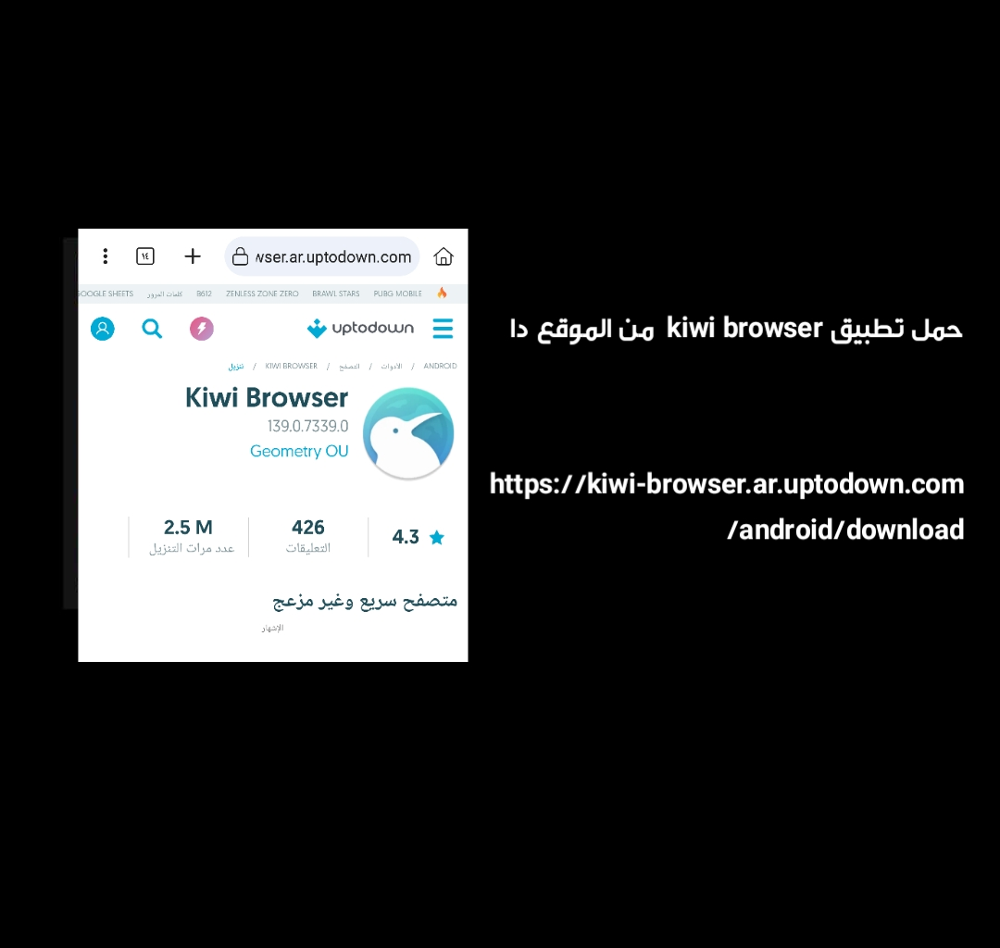
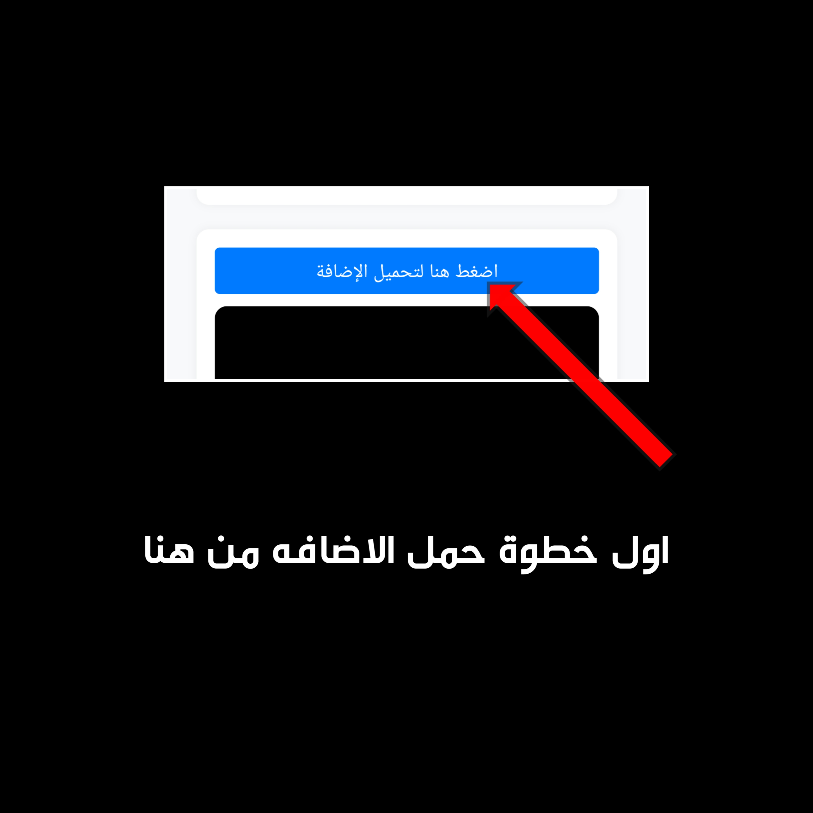

📘 دليل خطوة بخطوة
١. قم بتثبيت متصفح Kiwi من متجر Google Play ثم قم بتشغيل التطبيق.
٢. أدخل الرابط التالي في البحث: تحميل الإضافة
٣. بعد الإدخال، ستظهر مطالبة تطلب منك تنزيل الملف؛ تابع بالنقر على خيار التنزيل.
٤. بعد اكتمال التنزيل، اضغط على الثلاث نقاط في الزاوية اليمنى العليا، ثم اختر خيار "الإضافات".
٥. في قائمة الإضافات، قم بتمكين وضع المطور، ثم انقر على زر "+" لإضافة الإضافة من ملف zip أو crx أو user.js.
٦. حدد ملف zip الذي تم تنزيله مسبقًا وانقر عليه لبدء عملية التثبيت.
٧. بعد اكتمال التثبيت، راقب أداة C3C fbstate في الزاوية اليمنى السفلى وقم بتفعيلها بالنقر عليها.
٨. بعد التفعيل، انتقل إلى Facebook.com باستخدام متصفح Kiwi وقم بتسجيل الدخول إلى حسابك.
٩. بعد تسجيل الدخول، افتح القائمة بالنقر على الثلاث نقاط في الزاوية اليمنى العليا، ثم مرر للأسفل وابحث عن أداة C3C fbstate.
١٠. سيتم توجيهك إلى صفحة أخرى؛ ابحث عن خيار "نسخ إلى الحافظة" وانقر عليه لنسخ الكوكيز الخاصة بك للاستخدام لاحقًا.
١١. الصق الكوكيز المنسوخة في https://razer-bot-soyeon.onrender.com، ثم مرر للأسفل لمراجعة الشروط وسياسة الخصوصية بعناية.
١٢. بعد مراجعة الشروط وسياسة الخصوصية بعناية، حدد المربع لتأكيد فهمك ثم أرسل المعلومات.
١٣. أدخل "اوامر" لتأكيد حالة تشغيل البوت. إذا استجاب، تهانينا على التحقق الناجح.

ملاحظات مهمة:
- قد يكون الحساب مقفل في أول محاولة، فقط أعد المحاولة.
- تجنب تسجيل الدخول من أجهزة متعددة أثناء تشغيل البوت.
- لا تغيّر كلمة المرور أثناء تشغيل البوت.
- نحن غير مسؤولين عن حالات القفل أو التعليق.
- لتسجيل بوت جديد، استخدم "تسجيل الخروج" فقط.